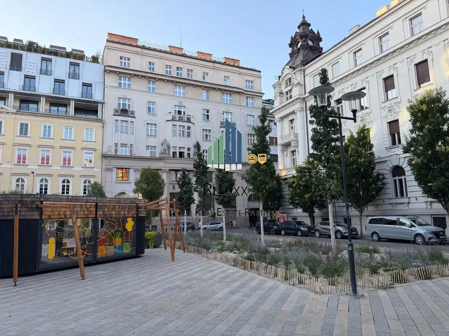
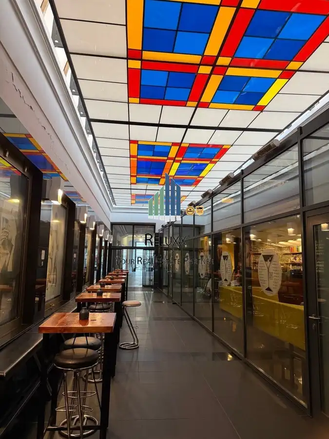
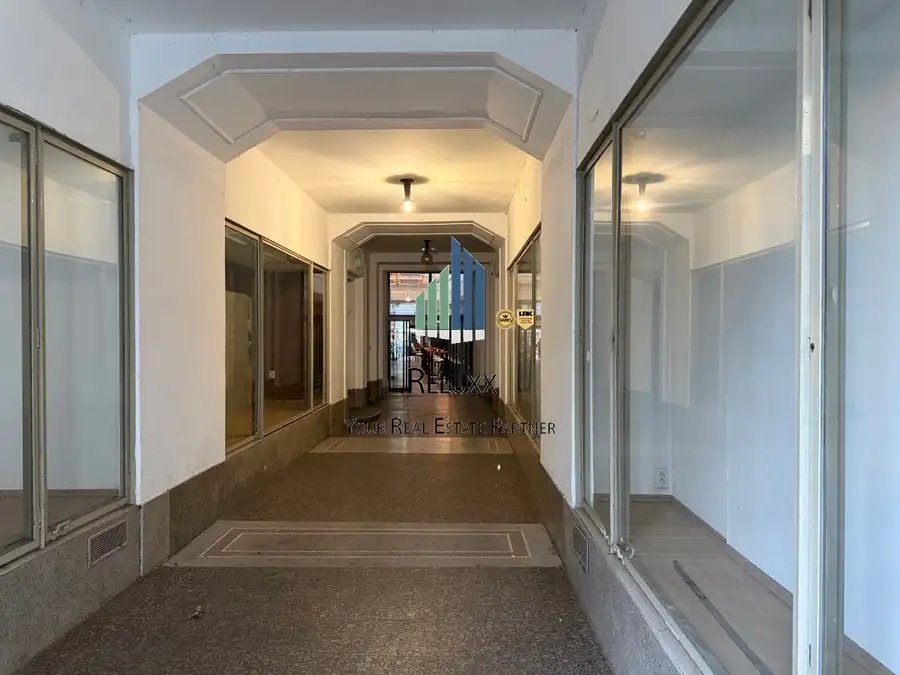
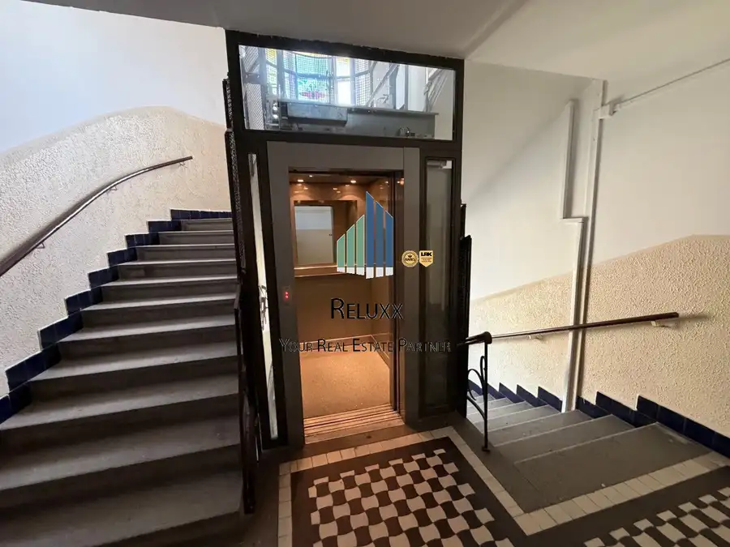
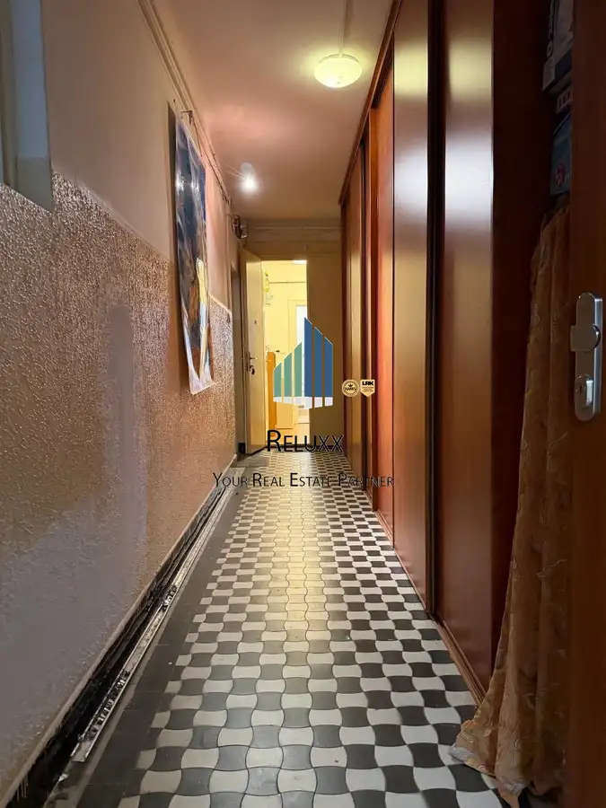
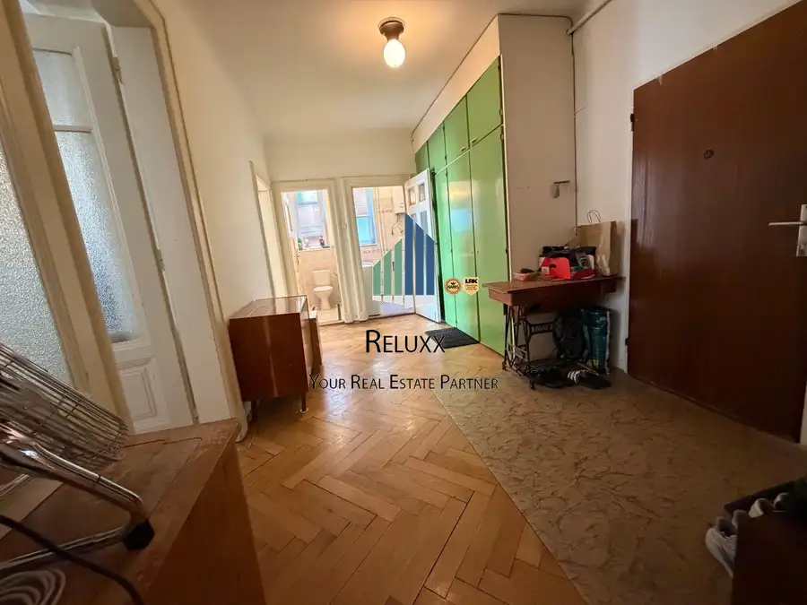
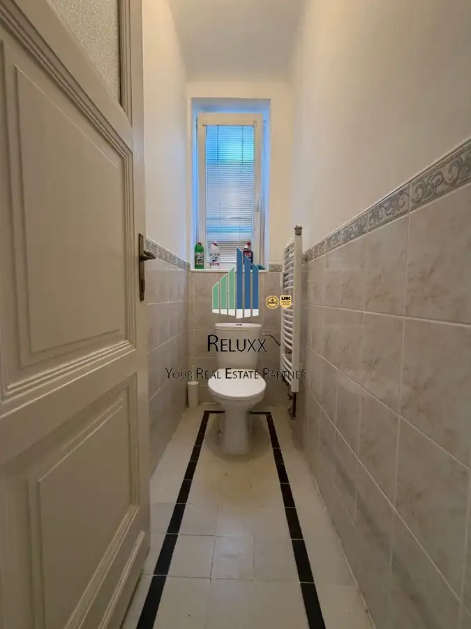
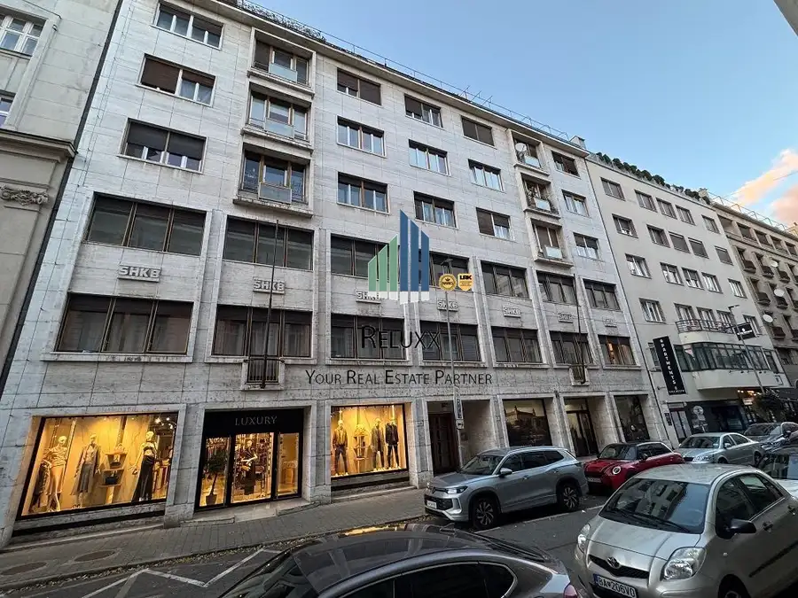
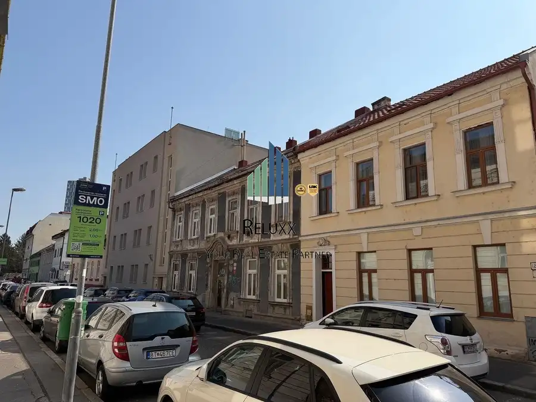
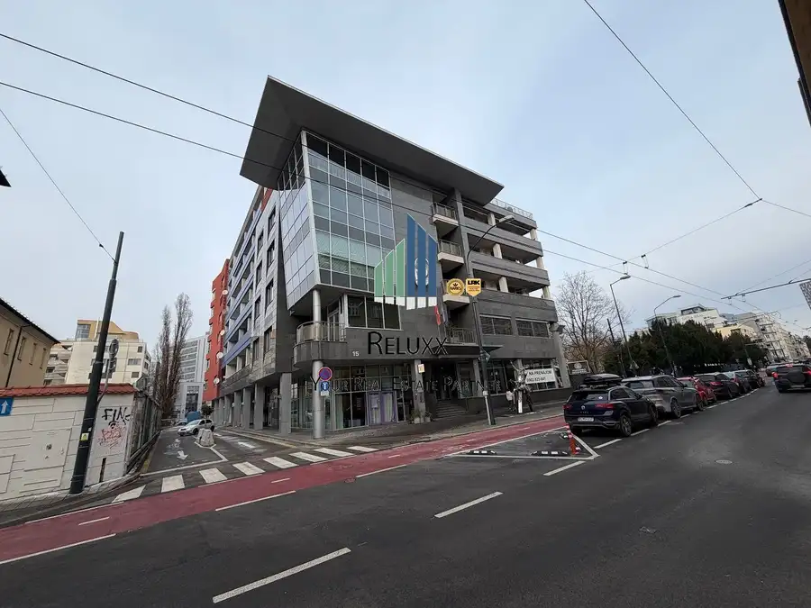

3+1 izbový dvoj generačný byt 132 m2 BA I Staré Mesto Gorkého 7 ul. na predaj
Staré Mesto, Bratislava







- Dispozícia4-izbový
- Plocha132 m²
- Poschodie8. z 9
- StavČiastočná rekonštrukcia
- VlastníctvoOsobné
O nehnuteľnosti
Unikátne dvojgeneračné bývanie na prestížnej adrese v srdci Starého Mesta (Gorkého 7) Bratislava.Hľadáte pre svoju rodinu výnimočný domov, kde môžete bývať spolu, no zároveň mať absolútne súkromie?Ponuka na predaj jedinečnú príležitosť – dva samostatné 3+1 izbový byt, priamo susediace byty na jednom podlaží s veľkou spoločnou vstupnou chodbou. Toto dispozičné riešenie je ideálnou odpoveďou na dnes mimoriadne vyhľadávané dvojgeneračné bývanie, prípadne ako kombinácia luxusného rezidenčného bývania a privátnej kancelárie na najlepšej adrese v Bratislave centre Starého Mesta.Základné informácie a dispozícia•Celková výmera: 132 m² (3-izbový byt: 100 m² + 1-izbový byt: 32 m²)•Lokalita: Gorkého 7 / Laurinská 10, Bratislava I - Staré Mesto•Poschodie: 8/9 s novým, veľkým výťahom•Bezbariérový prístup: Komfortný pohyb od vstupu do domu až po dvere bytov•Orientácia: Južná, s výhľadom do Gorkého ulice (slnečné a svetlé priestory)•Kúrenie: Centrálne s pomerným meraním spotreby na radiátoroch________________________________________Dispozičné riešenie (2 byty so spoločnou uzamykateľnou chodbou s vstavanými skriňami):1. Priestranný 3-izbový byt (100 m² + 30 m² atelier/pivnica v podkroví BD):•Veľká vstupná hala•3 samostatné nepriechodné izby zaliate slnkom•Samostatná kuchyňa so špajzou•Kúpeľňa a samostatné WC•Bonus: Nadštandardná pivnica v podkroví s výmerou až 30 m²2. Útulný 1-izbový byt (32 m²):•Vstupná hala•Priestranná obývacia izba / spálňa•Samostatná kuchyňa•Kúpeľňa spojená s WC________________________________________Bývajte v Národnej kultúrnej pamiatke s príbehomByty sa nachádzajú v ikonickom bankovom paláci z roku 1924 (bývalá Zemská banka), ktorý navrhli slávni pražskí architekti Osvald Polívka a Evžen Linhard.•Historický šarm: Fasádu zdobia monumentálne sochy Ladislava Šalouna, vnútri vás očarí tajuplný duch prvej ČSR.•Živá pasáž: Dom disponuje známou mestskou pasážou, ktorá prepája Gorkého ul. s Laurinskou ul. plnou kaviarní.•Skvelá komunita: V dome funguje príkladná susedská komunita, ktorá citlivo dbá o údržbu a historický vzhľad tejto železobetónovej skeletovej stavby. Bezpečnosť zaisťuje elektronický vrátnik.Prestížna lokalita, kde máte všetko na pešoGorkého ulica predstavuje absolútny investičný a lifestylový vrchol Bratislavy. Pár krokov od domu sa nachádza Hviezdoslavovo námestie, Slovenské národné divadlo, nábrežie Dunaja, prestížne reštaurácie, galérie a kompletná občianska vybavenosť. Rezidentské bezproblémové parkovanie je k dispozícii priamo v okolí bytového domu.________________________________________Cena a kontaktCelková ponuková kúpna cena oboch bytov v celku: 630 000,- znížená z pôvodnej ceny 790 000,- € (vrátane kompletného právneho a realitného servisu)Ak túžite spojiť rodinu na jednej adrese, bývať bez bariér a vlastniť kus bratislavskej histórie, neváhajte ma kontaktovať pre dohodnutie obhliadky.Martin Vaverčák +421 905 616 344 vavercak@reluxx.sk , www.reluxx.sk
Parametre
- Bezpečnosť
- Videovrátnik, Elektronický zámkový systém
- Cena vrátane energií
- Nie
- Doprava
- MHD, Cesta, Cyklistická infraštruktúra
- Druh
- 4 izbový byt
- Dátum zverejnenia
- 31. 07. 2026
- Energetická náročnosť
- Energeticky úsporný
- Energetický certifikát budovy
- nie je
- Energie
- 450
- Orientácia
- Juhovýchodná, Juhozápadná
- Podlažie
- 8
- Počet izieb / miestností
- 4
- Počet nadzemných podlaží
- 9
- Počet pivníc
- 1
- Príprava teplej vody
- Súbežne s ÚK
- Rok kolaudácie
- 1925
- Rok poslednej rekonštrukcie
- 2005
- Rok výstavby
- 1924
- Stav nehnuteľnosti
- Čiastočná rekonštrukcia
- Telekomunikácie
- Optická sieť, Internet, Káblová TV
- Typ
- Predaj
- Typ konštrukcie
- Skeletová, Železobetónová, Zmiešaná, Tehlová
- Umiestnenie
- Ďalšie nadzemné podlažie
- Vlastníctvo
- Osobné
- Vybavenie
- Pivnica, Výťah, Bezbariérový prístup, Špajza, Verejné parkovanie
- Vybavenie objektu
- Štandardné
- Vykurovanie
- Ústredné
- Zariadenie
- Čiastočne zariadené
- Zdroj tepla
- Teplo z kotolne
- Úžitková plocha
- 132 m²
Kde to je


Mohlo by Vás zaujímať

BytNové 619 000 €4 izbový investičný byt 130,31 m2 – 4 samostatné garsónky BA I Staré Mesto Gorkého ul. Staré Mesto, Bratislava 4-izbový130.31 m²5. podlažie
BytNové 258 000 €2-izbový štýlový podkrovný byt 56,10 m2 v centre Starého Mesta BA I Ferienčíkova ulica na predaj Staré Mesto, Bratislava 2-izbový56.1 m²2. podlažie
BytNové 745 000 €Predaj 4-izbový exkluzívny byt v centre Bratislavy – Dunajská ulica 15, Staré Mesto 143 m2 s 2x balkónmi Staré Mesto, Bratislava 4-izbový139.7 m²3. podlažie